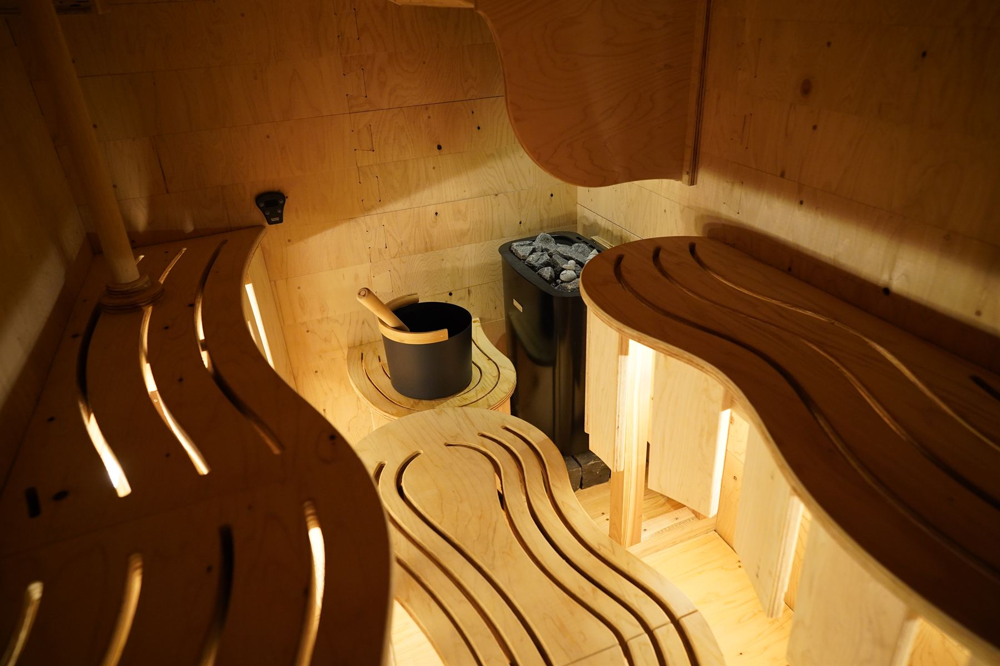
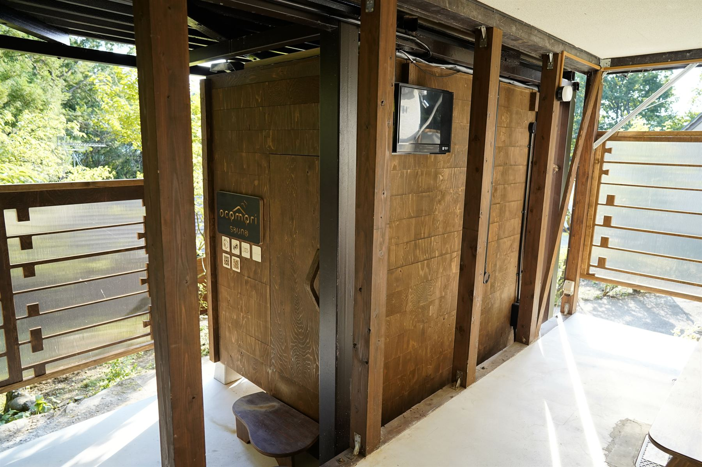
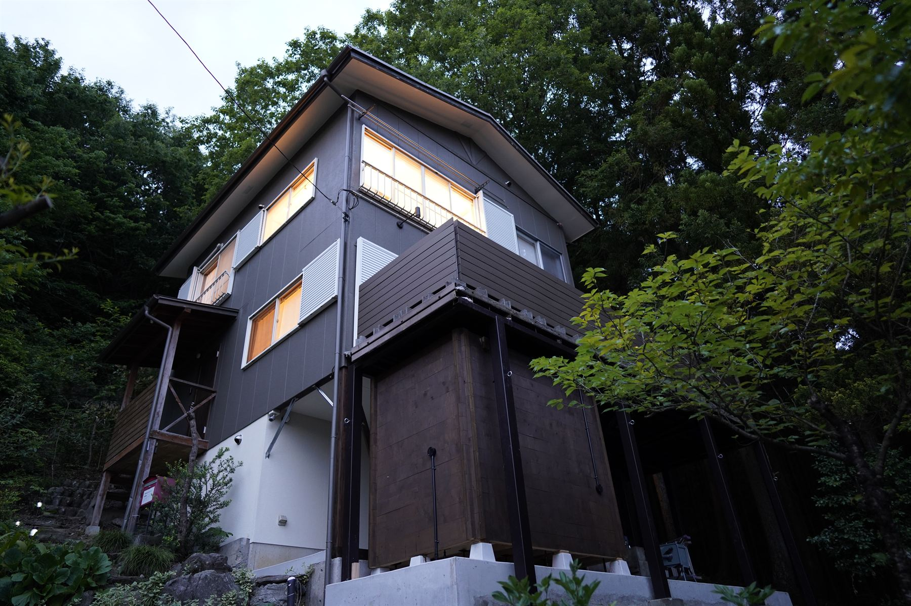

Case 01 — 宿泊施設
ocomori sauna
埼玉県秩父郡横瀬町
空き家を改装した1棟貸しのテレワーク・宿泊施設「ocomori」のテラス下に設置された、
ITaLOG SAUNA のフラッグシップ事例。フィンランド製 9kW ストーブを搭載。
波打つベンチは流体解析で導かれた気流を可視化したもので、
「鼻血が一筋垂れた」と表現されるほどの蒸気体験を提供します。
- 設置形態
- 屋外・テラス下
- 運用
- 宿泊・日帰り利用
- ストーブ
- フィンランド製 9kW
- 完成年
- 2023年

